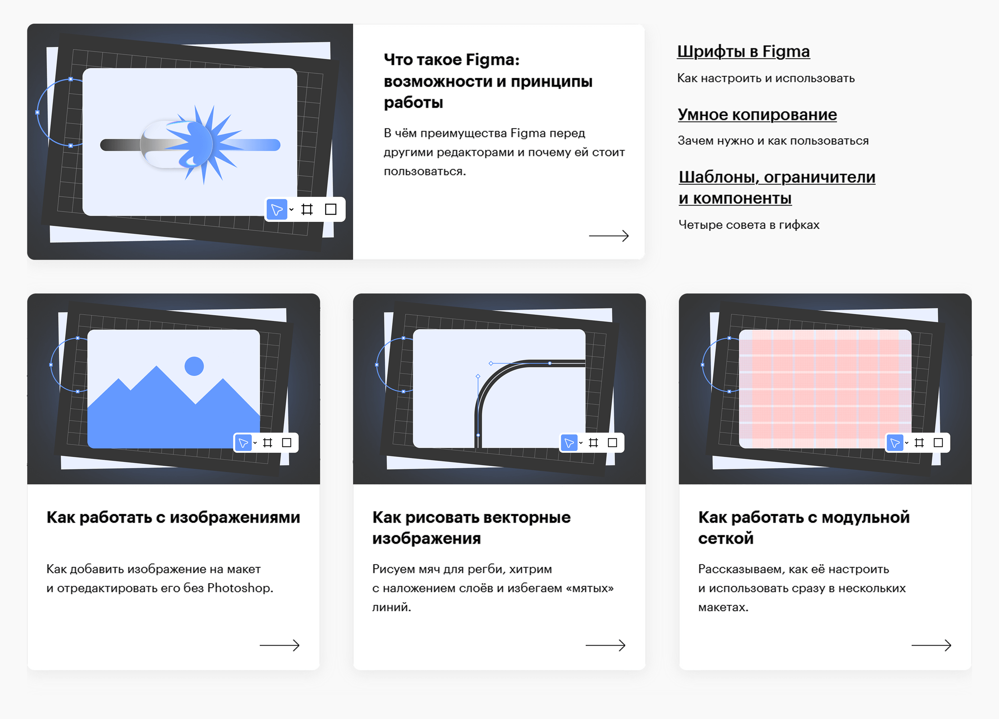
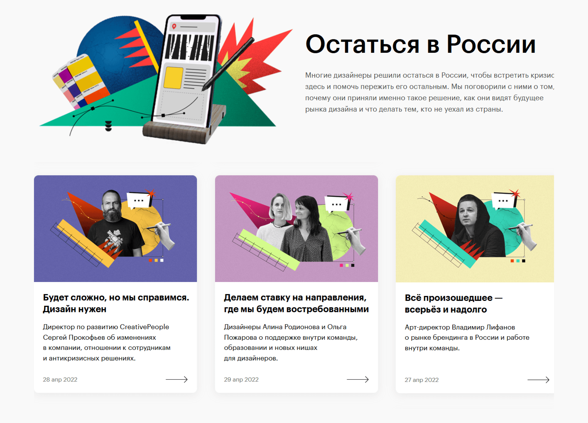
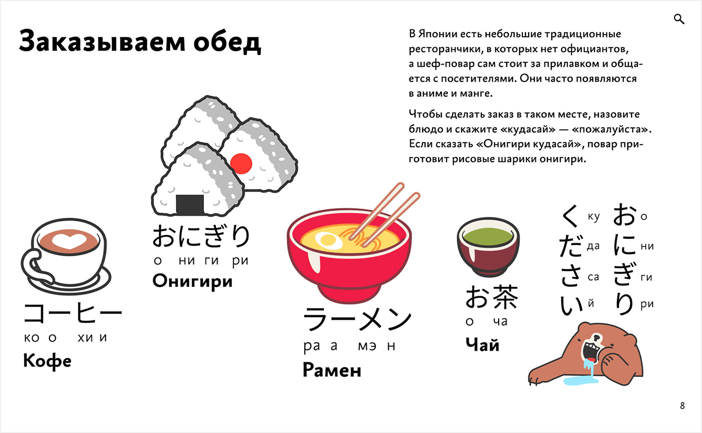
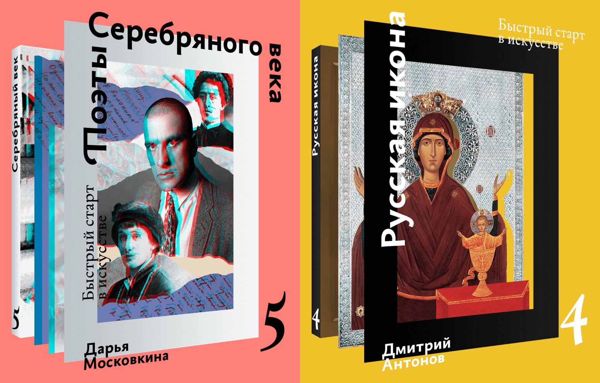

«Аризо» и Vizbl
Стартап, который делает сервис виртуальной примерки мебели, напольных покрытий, ковров, картин, дисков для колёс, одежды.
Как продуктовый редактор, я участвую в разработке платформы и отвечаю за текст компании: от микротекста в интерфейсе до промостраниц и публикаций на внешних площадках.
Инструкции и пользовательские сценарии
Написал и поддерживаю все публичные инструкции по продуктам «Аризо» и Vizbl. Сам прохожу пользовательский путь и описываю процесс подключения платформы на сайты:
Регулярно разговариваю с разработчиками и выясняю нужные детали, чтобы быть в курсе изменений продукта и вовремя обновлять материалы.
Я много знаю о функциях платформы, поэтому подключаюсь в процесс внешней коммуникации — помогаю менеджерам отвечать на вопросы пользователей и подключать наши виджеты на сайты клиентов. При необходимости — дорабатываю инструкции, если ответа на вопрос пользователя там не оказалось.
Моя работа над инструкциями помогает команде вовремя отлавливать критические баги и решать продуктовые противоречия.
Перед большим обновлением Vizbl и «Аризо» вся команда продукта усиленно кранчила. Когда я вычитывал интерфейсы и делал новые инструкции, заметил, что нейросеть придумала и внедрила функцию публичного ключа, которой в продукте быть не может, так как она противоречила утверждённым механикам интеграций. Я подсветил эту проблему и разработчики вырезали её до релиза.
Внутренняя документация продукта
Сделал «библию Vizbl» — источник истины для отдела продаж: какие виды интеграции у нас есть, что говорить о технических ограничениях платформы, на каких условиях мы продаём дополнительные услуги, чего не хотим делать никогда. Также в нём указаны исследования AR-рынка, которые мы можем использовать на переговорах с клиентами и промостраницах. Внутри компании этот документ стали называть «самым главным» (-:
Слежу за порядком в описании тарифной логики — в какой момент и за что мы берём плату за работу виджетов «Аризо» и Vizbl.
В «Аризо» и Vizbl работает система оплаты токенами — пользователь пополняет баланс и он расходуется, когда покупатели начинают взаимодействовать с интеграциями на сайте: загружают фото в 2D-виджет или открывают объект в AR-просмотре.
Перед внедрением этой системы в «Аризо» и Vizbl команда не успела собрать все правила списаний: знания о цене за токен и списаниях находились в разных документах и кусках интерфейсного текста. Поэтому я собирал всё сам — и если находил противоречия, обсуждал это со всей командой разработки.
Благодаря этому я смог вовремя сделать публичную инструкцию о тарификации для «Аризо» и Vizbl — а позже эта инструкция выросла во внутренний документ, которым пользуются разработчики и отдел продаж.
Вместе с продуктовым дизайнером поддерживаем базу знаний продукта — большой набор md-файлов для LLM, который знает всё о публичной стороне продукта. База помогает при разработке новых фич, составлении промостраниц, поддержке внутренней и внешней документации.
Запуск промостраниц
Запустил производство промостраниц для «Аризо» и Vizbl. Сейчас их использует наш маркетолог для таргета в Google и всяких запрещённых соцсетях.
Первый пуск делал в команде из трёх редакторов — нам нужно было сделать семь промостраниц к выставке. На входе мы получили сгенерированный сайт, поэтому каждый абзац из него внимательно изучали на соответствие реальным функциям. Финальный шаблон для боевой вёрстки появился за три дня до дедлайна. Я перенёс в него тексты и адаптировал их под обновлённую структуру — и всё опубликовал в срок.
Я добился, чтобы на этих страницах появились живые демо наших 2D- и AR-решений, чтобы пользователи поскорее увидели, что и как мы можем визуализировать в их магазинах.
Вот некоторые:
Медийная поддержка
Руководил выпуском публикаций в профиле компании на «РБК Компании» и готовил пресс-материалы. Также пишу новости для сайта Vizbl, помогаю маркетингу со сценариями рекламных роликов и вебинаров для YouTube.
Журнал о дизайне и искусстве «поле»
Бывший Skillbox Media. Рассказываем об актуальном и современном дизайне, искусстве и культуре.
Отредактировал и выпустил 150 своих и примерно 600 авторских текстов: спецпроекты, кейсы, интервью, руководства.
Телеграм — ВК — Сайт (бывший)
Спецпроекты
Самоучитель по Figma. Сформировал стиль инструкций внутри издания, написал каждый текст, записывал видео, готовил короткие видео для соцсетей, поддерживал актуальность информации.
К нам в редакцию часто приходили благодарности об этом спецпроекте: от коллег со стороны, кураторов Skillbox, наших читателей.

Большой гид для самостоятельного изучения Figma«Режим самосохранения». Сборник коротких интервью о том, как дизайнеры и арт-директоры справлялись с кризисом февраля 2022 года.

Как февраль изменил дизайн в РоссииКейсы
Помогал студиям и агентствам рассказать о своих проектах в поле: проводил интервью, направлял повествование, выстраивал визуальную историю.
Maryco. Вместе с командой дизайнеров студии сделали много клёвых выпусков: о рабочих процессах, дизайнерских проектах, проектировании интерфейсов.
- Проект podonki works: плакаты как испытание и эксперимент.
- Коллаборации дизайнеров: лид‑дизайнер о том, как выстроить эффективные процессы в студии.
- Зачем дизайнеру рисовать шрифты: колумнисты maryco о том, как это помогает расти дизайнерам.
Flowwow. Помог ребятам рассказать про совместную работу дизайнеров и разработчиков и собрали кейс про адаптацию нового фирменного стиля под интерфейс мобильного приложения.
- Ребрендинг приложения Flowwow: как встраивать сложные графические решения в интерфейсы приложений.
- Дизайн vs фронтенд: секреты win‑win‑взаимодействия.
G8. Провели два созвона с командой Vosk, поговорили об оформлении G8 2023 года и будущем профессии.
- «Айдентика будущего»: студия VOSK о фирстиле G8 2023.
NZHL. Душнейший, но очень интересный кейс обновления интерфейса новозеландского банка.
- Новый интерфейс на старых рельсах: редизайн личного кабинета банка из Новой Зеландии.
Другие материалы
Кроме спецпроектов и кейсов сделал в поле много других статей: разборы, интервью, руководства, подборки.
- Одежда в играх. Рассказали на примерах кейсов, как создавали одежду в Mass Effect, Dishonored, Control.
- Паблик-арт. Большой обзор художественной сферы. Вместе с автором рассказали, к чему нужно быть готовым и как договориться с администрацией.
- Интервью с Юрием Гордоном. О типографике, задачах шрифта и «идеальном» решении шрифтовой задачи.
- Интервью с Владимиром Лифановым. О ценности фирстиля для клиента, ограничениях и отношении к работе.
Также следил за руководствами в издании: придумал правила оформления и редактуры, подгонял материалы под общий формат, и при необходимости следил за актуальностью текстов.
- Наброски. Подробный гайд, как начать рисовать людей. Объяснили основы и выстроили план для самостоятельного обучения.
- Препресс. Помог автору оформить все её знания о том, как правильно готовить макеты к печати.
- Лайтрум. Вместе с куратором Skillbox собрали серию подробных гайдов, как правильно красить фотки.
SEO
Оптимизировал материалы под поисковики так, чтобы они оставались интересны и полезны живым читателям.
Некоторые материалы со среднемесячными охватами:
- Нейросети для презентаций. 95 тысяч просмотров в месяц.
- Cервисы для создания презентаций. 15 тысяч.
- Самые большие города в мире. 11 тысяч.
- Нейросетей для создания логотипов. 11 тысяч.
Бюро Горбунова
Дизайн-бюро, в котором проектируют продукты, выпускают книги и делают школу.
Здесь выпустил три книги, помогал выпускать видео-советы Артёма, собирал быстрые прототипы промостраниц.
Писал и редактировал: анонсы книг, рассылку о кофе, новости с запусками новых продуктов Бюро Горбунова, лекцию о фигме для подготовительных курсов Школ бюро.
Учебник «Японский язык без страха»
Верстал книгу и отлаживал промостраницу, выпускал анонсы и рассылки с рассказами о новых главах, редактировал черновик автора.
Специально для книги придумал и спроектировал формат достижений — читатели проходят тест внутри книги и в награду получают «медальку» с интересным фактом о Японии.

Промостраница учебника «Японский язык без страха»Брошюры «Русская икона» и «Поэты Серебряного века»
Входят в состав полки «Быстрый старт в искусстве». Верстал и редактировал брошюры, писал анонсы.

Промостраница полки «Быстрый старт в искусстве»Ютуб-канал Бюро Горбунова
С 2018 по 2021 год работал над ютуб-каналом бюро. Составлял задания для монтажёров, натаскивал стажёров, придумывал обложки. Также придумывал сценарии концовок и наводил юмор:
- концовка с Илоном Маском;
- концовка с примером согласования замечаний у А. Г.;
- Эм-эл-джи концовка с песней «Супергут»;
Иногда монтажил сам. Например:
Написал сценарий и сделал раскадровку к клипу «Пандемия»:
Журнал «Кто студент»
Полгода руководил студенческим журналом школ бюро.
Любимые выпуски: